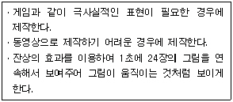
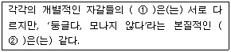
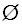
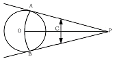

컴퓨터그래픽스운용기능사 (2009-01-18 기출문제)
1과목: 산업디자인 일반
1. 다음 설명과 관련 있는 것은?

- 멀티스크린
- 애니메이션
- 컴퓨터그래픽스
- 홀로그래피
(정답률: 90%)

2. 실내 디자인에서 기본 설계와 실시 설계로 구분할 때, 주로 실시 설계도에만 이용되는 것은?
- 배치도
- 평면도
- 구조 설계도
- 입면도
(정답률: 61%)
3. 다음 내용의 ( )에 가장 적절한 용어는?

- ① 형(shape), ② 형태(form)
- ① 형태(form), ② 형(shape)
- ① 개념(concept), ② 형(shape)
- ① 개념(concept), ② 형태(form)
(정답률: 61%)
4. 라이프스타일에 대한 내용으로 부적합한 것은?
- 사람들이 살아가고 돈과 시간을 소비하는 전반적인 양식을 의미하는 것이다.
- 생활의 구조적 측면인 생활의식, 생활행동, 관심 등이 복합되어 있는 것이다.
- 생활수준의 전반적인 향상이 높은 지식과 자기의식, 개성 및 자기주관을 가진 다양한 소비자 계층이 등장하고 있다.
- 라이프스타일의 변화는 기술혁신과 정보화로부터 큰 영향을 받지 않는 개성에 주목한다.
(정답률: 82%)
5. 다음 중 디자인 컨셉트에 대한 설명으로 가장 옳은 것은?
- 자연물과 조형물을 정확하게 관찰하여 표현하는 것이다.
- 대상물의 특성을 살리면서 간결하게 표현하는 것이다.
- 개념화, 아이디어 구상, 계획하는 것이다.
- 제품의 이미지를 구체화하여 모형을 제작하는 것이다.
(정답률: 74%)
6. 상대적인 경쟁적 우월성을 확보할 수 있는 새로운 시장 부문을 의미하는 것으로 틈새시장을 의미하는 것은?
- 벤처시장
- 전략시장
- 리치마켓
- 디자인마켓
(정답률: 53%)
7. 다음 중 인간, 자연 사회화의 대응 관계를 전제로 디자인을 분류할 때 포함되지 않는 것은?
- 시각전달 디자인
- 상업 디자인
- 제품 디자인
- 환경 디자인
(정답률: 56%)
8. 다음 중 조명의 4요소를 바르게 배열한 것은?
- 명도, 대비, 크기, 노출시간
- 채도, 색상, 면적, 장소
- 채도, 명도, 색상, 노출시간
- 조화, 대비, 크기, 장소
(정답률: 52%)
9. 위치와 방향을 가지는 선의 집합으로 길이와 너비를 가진 디자인 요소와 관계있는 표현 재료는?
- 종이, 철사
- 나무젓가락, 아크릴판
- 노끈, 낚싯줄
- 폼 보드, 하드보드지
(정답률: 65%)
10. 디자인에서 기초 조형의 목적이 아닌 것은?
- 조형에 대한 감각 훈련
- 창조성 개발
- 마케팅 활동 능력 배양
- 표현 기술의 습득
(정답률: 84%)
11. 품질, 비용, 서비스 속도와 같은 핵심적인 성과에서 극적인 향상을 이루기 위하여 기업의 업무 프로세스를 근본적으로 재설계하는 것은?
- 벤치마크
- 리엔지니어링
- 반달리즘
- 컨설턴츠
(정답률: 66%)
12. 애니메이션 용어에 대한 설명으로 틀린 것은?
- 액션(action)이란 이야기를 구성하기 위한 인물 및 물체의 움직임을 말한다.
- 애니메이션 보드(animation board)란 카메라에 부속되어 있는 조정 핀을 말한다.
- 애트모스피어 스케치(atmosphere sketch)란 애니메이션의 배경에 사용하기 위해 어느 장소의 인상을 기록해 두는 일을 말한다.
- 오브젝트 애니메이션(object animation)이란 인간이나 동물이 등장하는 애니메이션을 말한다.
(정답률: 56%)
13. 질감에 대한 설명으로 틀린 것은?
- 빛에 의해 만들어지므로 명암효과에 따라 다르게 보일 수 있다.
- 명도의 대비나 시각적 거리감과 함께 표현된다.
- 물체의 운동감을 주로 표현한다.
- 촉각적 질감과 시각적 질감으로 나누어진다.
(정답률: 70%)
14. 수공예 부흥운동인 Art&Craft는 다음 중 어떤 양식을 주로 추구했는가?
- 바로코
- 고딕
- 로코코
- 로마네스크
(정답률: 67%)
15. 다음 중 제품디자인에서 작업시 고려해야 할 일반적인 조건이 아닌 것은?
- 기능성
- 성실성
- 심미성
- 경제성
(정답률: 89%)
16. 가구의 물리적 요소분석에서의 기능이 아닌 것은?
- 대공간적 기능
- 대심리적 기능
- 대인적 기능
- 대환경적 기능
(정답률: 57%)
17. 다음 중 디자인이 갖추어야 할 조건 중에서 실제의 쓸모를 말하는 것은?
- 심미성
- 기능성
- 창의성
- 독창성
(정답률: 89%)
18. 신문광고의 구성요소를 조형적 요소와 내용적 요소로 구분할 때, 내용적 요소에 가까운 것은?
- 일러스트레이션
- 트레이드 마크
- 로고타입
- 헤드라인
(정답률: 83%)
19. 바우하우스 운동의 창설자는?
- 윌리암 모리스
- 헨리 반 데 벨데
- 루이스 설리반
- 월터 그로피우스
(정답률: 65%)
20. 다음 중 시각이나 촉각으로 인식할 수 없으나 기하학적으로 취급되는 도형의 형태는?
- 인위 형태
- 현실적 형태
- 자연 형태
- 이념적 형태
(정답률: 80%)
2과목: 색채 및 도법
21. 다음 배색의 효과에 대한 설명으로 거리가 먼 것은?
- 고명도의 색을 좁게 하고 저명도의 색을 넓게 하면 명시도가 높아 보인다.
- 같은 명도의 색이라도 면적이 커지면 고명도로 보이고 밝아 보인다.
- 같은 채도의 색이라도 면적이 작아지면 저채도로 보이고 탁하게 보인다.
- 같은 명도의 색이라도 면적이 작아지면 고명도로 보인다.
(정답률: 57%)
22. 통일된 제도 규격에 맞추어 제도할 때의 이점이 아닌 것은?
- 도면이 정확하고 간결하며 능률적이다.
- 설계의도를 설계자의 직접 설명으로 전달할 수 있다.
- 생산 능률을 향상시키고 제품의 호환성을 확보할 수 있다.
- 원가절감 및 품질향상에 기여할 수 있다.
(정답률: 59%)
23. 색채 조화시 고려할 점과 가장 거리가 먼 것은?
- 기호적인 측면과 디자인적 시각의 차이
- 색 자체와 채색된 범위의 차이
- 디자인의 형태와 의미 또는 해석의 차이
- 관광이나 상술적 측면 등의 차이
(정답률: 81%)
24. 다음 중 가장 심리적으로 마음을 안정시키는 색은?
- 5Y 6/8
- 5B 4/6
- 5R 5/10
- 5YR 3/8
(정답률: 62%)
25. White, Black, Gray 각 바탕 위에서 주목성이 높은 순으로 나열한 것 중 맞는 것은?
- White 바탕 → Yellow, Red, Orange, Green
- Black 바탕 → Yellow, Orange, Red, Blue
- Gray 바탕 → Red, Orange, Yellow, Green
- Black 바탕 → Red, Orange, Green, Yellow
(정답률: 72%)
26. 다음 중 타원을 그리는 방법이 아닌 것은?
- 4중심법
- 대소부원법
- 평행사변형법
- 직접법
(정답률: 58%)
27. 다음 관용 색명 중 지명(地名)에서 따온 것은?
- 셀몬 핑크(salmon pink)
- 피치(peach)
- 앰버(amber)
- 프러시안 블루(prussian blue)
(정답률: 74%)
28. 다음 중 연결이 잘못된 것은?
- 신인상파 화가의 점묘화 - 중간혼합
- 멕스웰 원판(Maxwell disk) - 중감혼합
- 영-헬름홀츠 - 4원색설
- 월슨 - 3수용체설
(정답률: 52%)
29. 주황색의 도형은 배경색을 바꿀 때마다 다른 색으로 보이는데 이에 대한 설명으로 틀린 것은?
- 파랑 배경에서 더 탁해 보인다.
- 검정이 섞인 빨강 배경에서 더 밝아 보인다.
- 회색이 섞인 빨강 배경에서 더 선명해 보인다.
- 노랑 배경에서 빨강 기미를 띤 주황으로 보인다.
(정답률: 50%)
30. 제도에서

20이 뜻하는 것은?- 물체의 반지름이 20mm이다.
- 물체의 지름이 20mm이다.
- 판의 두께가 20mm이다.
- 물체의 길이가 20mm이다.
(정답률: 79%)
31. 원칙적으로 길이 방향으로 절단한 단면도로 표시해도 좋은 것은?
- 축
- 구부러진 관
- 볼트
- 기어의 이
(정답률: 55%)
32. 다음 중 눈의 색 지각에 대한 설명으로 틀린 것은?
- 간상체가 추상체보다 훨씬 세밀하게 반응한다.
- 시각은 망막의 다른 부분보다 중심에서 휠씬 세밀하게 반응한다.
- 망막의 각 부위에서 느끼는 색의 감광도로 서로 다르다.
- 간상체는 뇌에 이르는 전용 시신경을 가지고 있지 않다.
(정답률: 40%)
33. 다음 중 병치중간혼합의 예가 아닌 것은?
- 컬러인쇄의 망점
- 점묘법에 의한 회화작품
- 2가지 색이 칠해진 회전하는 원판
- 여러 가지 색의 실로 직조된 직물
(정답률: 62%)
34. 다음 중 제3각법의 장점이라고 볼 수 없는 것은?
- 자연적인 형(선박, 가옥의 경우)을 나타낼 수 있다.
- 정면도의 표현이 합리적이다.
- 치수기입이 합리적이다.
- 보조투상이 용이하다.
(정답률: 51%)
35. 다음 중 색광 혼합에 대한 설명으로 옳은 것은?
- 감법 혼색 또는 감산 혼합이라고 한다.
- 색광의 3원색은 자주(M), 노랑(Y), 청록(C)을 말한다.
- 색광은 혼합하면 할수록 채도가 낮아진다.
- 색광은 혼합하면 할수록 명도가 낮아진다.
(정답률: 49%)
36. 다음 중 흥분을 유발할 수 있는 색채는?
- 남색과 연두
- 녹색과 자주
- 빨강과 노랑
- 청록과 파랑
(정답률: 92%)
37. 색의 3속성 개념을 도입한 색상환에 의해서 색의 조화를 유사 조화와 대비 조화로 나누고 정량적 색채 조화론을 제시한 사람은?
- 오스트발트(ostwald)
- 슈브뢸(Chevreul)
- 먼셀(Munsell)
- 져드(Judd)
(정답률: 45%)
38. 다음 도형에서 구하고자 하는 것은?

- 원주 밖의 1점에서 원에 접선 긋기
- 원의 중심 구하기
- 주어진 반지름의 원 그리기
- 수직선을 2등분 하기
(정답률: 70%)
39. 다음 중 단색광(monochromatic light)을 바르게 설명한 것은?
- 가장 짧은 파장의 광선
- 두 단색광을 합하여 백색광이 되는 광선
- 눈에 보이지 않는 광선
- 더 이상 분광될 수 없는 광선
(정답률: 61%)
40. 투시도법의 종류에 대한 설명으로 틀린 것은?
- 직접법은 시선과 족선을 이용하는 방법이다.
- 거리점법은 시점과 시거리를 이용하는 방법이다.
- 소실점법은 직선의 소실점을 이용하는 방법이다.
- 측점법은 소실점과 직선의 측점을 이용하는 방법이다.
(정답률: 31%)
3과목: 디자인 재료
41. 7 세기에 우리나라에서 일본으로 건너간, 규모가 작은 수초법(手抄法)에 의해 만들어진 종이는?
- 켄트지
- 와트만지
- 화지
- 한지
(정답률: 73%)
42. 고체 무기재료 중 비결정의 탄화수소계 물질로서, 주원소가 비금속인 탄소로 이루어진 것은?
- 플라스틱
- 유리
- 금속
- 도자기
(정답률: 57%)
43. 파스텔 재료를 이용한 스케치를 하기 전에 알아두어야 할 상식으로 맞지 않는 것은?
- 선의 느낌은 연필과 비슷하나 그림자 부분을 묘사하기가 쉽다.
- 정착액이 필요하다.
- 다양한 색채를 만들 수 있어서 회화의 재료로도 쓰인다.
- 매우 정확하고 정밀한 부분을 세밀하게 표현할 수 있다는 장점이 있다.
(정답률: 77%)
44. 다음 채색 재료 중 플라스틱 심으로부터 연속적으로 수성 또는 유성 잉크가 나와 채색할 수 있어서 러프 스케치에 가장 많이 사용하는 재료는?
- 컬러마커
- 싸인펜
- 파스텔
- 크레용
(정답률: 69%)
45. 종이를 잡아 당겨서 판단될 때까지의 신장률을 표시하는 것은?
- 신축율
- 인장율
- 인열율
- 파열율
(정답률: 50%)
46. 소석고에 관한 설명 중 옳지 않은 것은?
- 소석고는 경석고에 비해 건조시간이 짧다.
- 석고원석을 190℃ 이내로 장시간 가열하면 소석고가 된다.
- 소석고의 경화촉진제는 석회이다.
- 작업시 물의 중량비는 40~50% 정도이다.
(정답률: 48%)
47. 긴 파장이나 자외선 등의 자극을 받으면 자극 제거 후에도 일정시간 빛을 내는 도료는?
- 시온도료
- 형광도료
- 방화도료
- 난연도료
(정답률: 77%)
48. 사람의 눈이 인식하지 못하는 700nm 이상의 장 파장광 촬영기는?
- 자외선 카메라
- 적외선 카메라
- X-선 카메라
- 고감도 카메라
(정답률: 71%)
4과목: 컴퓨터 그래픽스
49. 컴퓨터그래픽스의 발전 요인 중 그 이유가 다른 하나는?
- 다양한 프로그램의 개발
- 멀티미디어의 확대
- 컴퓨터의 기능 향상
- 컴퓨터의 가격 인하
(정답률: 85%)
50. 2차원 이미지를 3차원 이미지처럼 입체적으로 보이게 하기 위해 많이 사용하는 필터는?
- Blur 필터
- Emboss 필터
- Wind 필터
- Sharpen 필터
(정답률: 79%)
51. 그래픽 이미지 형성에 있어서 다음 중 그 성격이 다른 것은?
- 화소(pixel)
- 래스터 이미지
- 벡터 이미지
- 비트맵 그래픽
(정답률: 60%)
52. 3×4cm의 원고사진을 300dpi 해상도, 6×8cm의 크기로 인쇄할 필름을 출력하려고 한다. 몇 dpi로 원고 사진을 스캔하는 것이 적합한가?
- 1200dpi
- 900dpi
- 600dpi
- 300dpi
(정답률: 66%)
53. 3차원 모델 데이터를 얻기 위한 입력장치는?
- 플랫베드 스캐너
- 3D스캐너
- 카메라
- 인코더
(정답률: 87%)
54. 디자인 도구로서의 컴퓨터그래픽스에 대한 내용으로 잘못된 것은?
- 가장 보편적인 분류에 의하면 2차원적인 평면처리와 3차원적인 입체 처리로 나누어진다.
- 수정이 용이하며 무한대로 복제할 수 있다.
- 컴퓨터그래픽스는 3차원의 물체를 표현하며 예술성 있는 작품은 구현이 어렵다.
- 3차원 물체에 명암과 색상을 입히는 과정을 렌더링이라고 한다.
(정답률: 77%)
55. 컴퓨터의 입력장치가 아닌 것은?
- 키보드
- 태블릿
- 필름 레코드
- 스캐너
(정답률: 75%)
56. 3차원 소프트웨어에서 2차원 도형에 Z축으로 깊이를 주어 3차원 오브젝트(object)를 만드는 방식은?
- Revolver 방식
- Extrude 방식
- Bevel 방식
- Compound 방식
(정답률: 50%)
57. 다음 설명으로 가장 옳은 것은?
- 일반적인 영화필름의 형태는 초당 32Frame으로 표현된다.
- 싱가포르, 말레이시아 등의 방송 시스템에서 사용하는 방식을 PAL이라고 하는데 초당 12Frame을 보여 준다.
- 우리나라를 비롯 미국, 캐나다, 일본 등의 방송 시스템에서 NTSC 방식을 사용하는데 초당 29.97 Frame을 보여준다.
- 일반적인 비디오 포맷 형태로 초당 24Frame으로 보여준다.
(정답률: 59%)
58. 24비트 컬러 중에서 정해진 256컬러의 컬러표를 사용하는 컬러 시스템은?
- Gray mode
- Bitemap mode
- CMYK mode
- Index color mode
(정답률: 57%)
59. Texture를 사용하여 물체의 음양각을 주는 기법은?
- 텍스쳐 매핑(texture mapping)
- 범프 매핑(bump mapping)
- 라디오시티(radiosity)
- 섀도잉(shadowing)
(정답률: 43%)
60. 2차원 애니메이션 제작에서 직접적으로 사용되는 기법이 아닌 것은?
- 인비트원(in-between)
- 모핑(morphing)
- 지-버퍼(Z-buffer) 알고리즘
- 로토스코핑(rotoscoping)
(정답률: 59%)